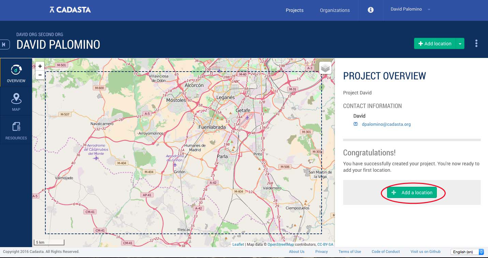
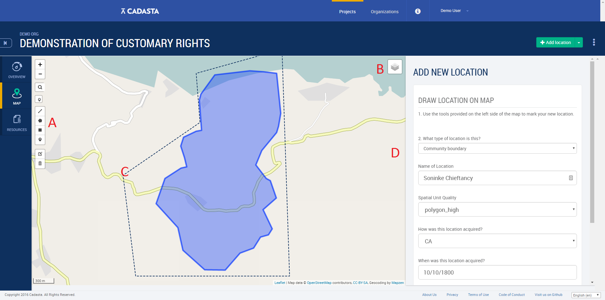
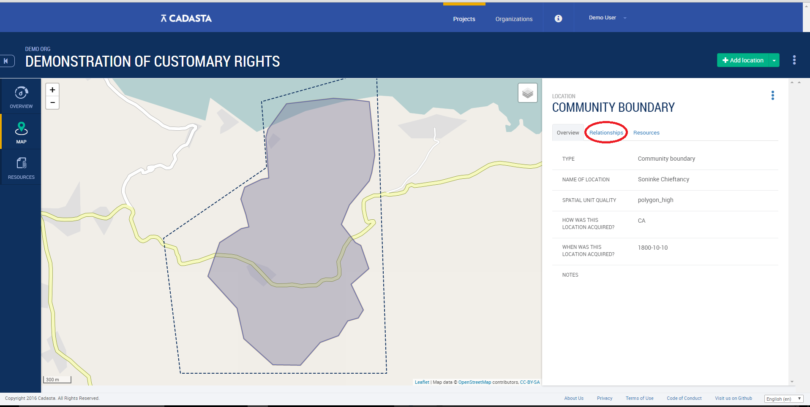
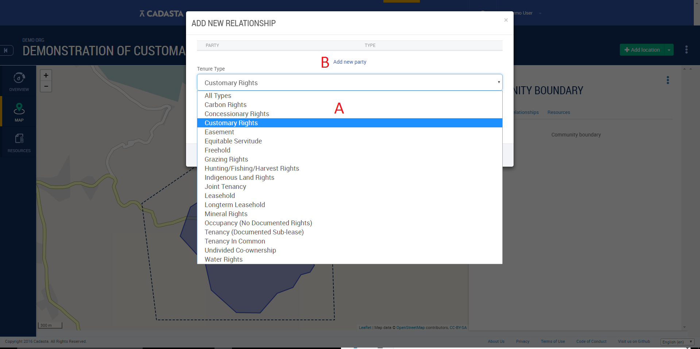
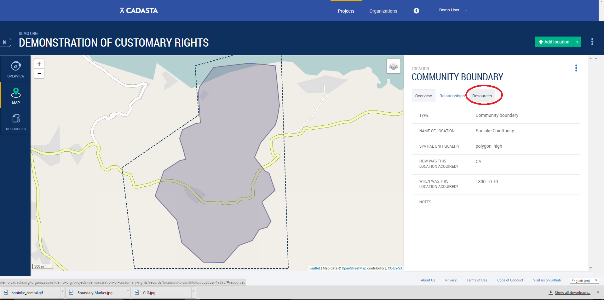
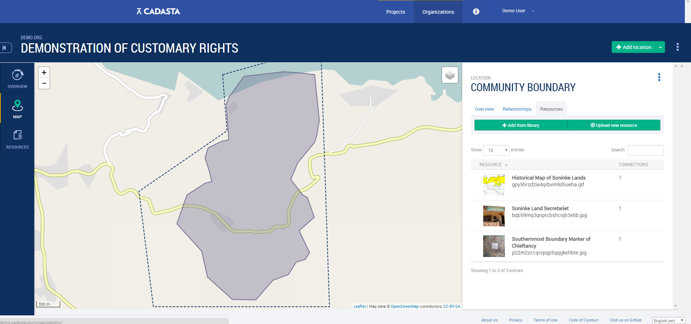

Record Management
Now that you have set up your organization and project, it's time to start recording land information.
The first step is defining the spatial details of a location for which a relationship is to be assigned. Defining the location can be done in a number of ways - currently we allow for direct data collection from OpenDataKit (ODK Collect) or GeoODK (Described in a subsuquent section), or digitizing from imagery. In the coming months we will be adding functionality to allow for entering GPS coordinates and utilizing the Field Papers application.
Let's begin by looking at digitizing from imagery.
Digitizing from Imagery
Location Information
- After logging into the Platform and navigating to your project, click Add a location to begin data entry. 
You can then use the drawing tools (see label A in the image below) to draw the location on the map as a point, line, or polygon, and if imagery is needed, remember that you can change the background by switching the map layers (see B below). Also note the boundary of the project area shaded in a dotted line as defined during the creation of the project (see C below).
Now fill out all property details as defined in the Excel Form (see Custom Data Collection Section for details) submitted during project setup (see D below).
Click Save and your first location has been recorded.

Relationship Information
Now that the spatial details have been recorded, its now necessary to establish a relationship between the person or party, and the location.
- From the Project Overview page, select Relationships and then Add Relationship. 
- You will be prompted to define the relationship, or tenure, type (see A below) as defined by the Excel form, and then prompted to add a party with which the relationship will be established (see B below).

Associating Resource Files
Now that we have added locations and established relationships with a party, it may be useful to provide evidence of the rights. This might vary to include pictures of properties, right holders or documentation attesting to rights (transfer documents, tax payments receipts, etc), or video or audio files detailing agreements on rights and\/or boundaries.
- Select Resources from the overview page. 
- Now you can either upload resources directly, or add them from the resource library if you have already saved to the project. The Resource File will be associated with the location in question.
